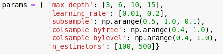

For the purpose of modeling, we chose 4 ARTCC to model: Washington, D.C., Jacksonville, FL, Miami, FL, and Seattle, Washington. You can learn more about why we chose those 4 from our findings. We then gathered data for only the 6-hour time periods of the day: 0600, 1200, 1800, and 2400. This included cell location (nx, ny), the ISSR count at the cell location, average temperature, and average relative humdiity over ice.
We attempted 2 different time series models: LSTM and XGBoost
The initial approach of LSTM was to design two different models for each ARTCC were created to represent two flight level ranges: FL 200-430 and FL 300-370.
Despite the two different flight windows, the model's results remained fairly uniform. It was apparent that the model was unable to learn the nuances of our data. For a 4-day date range in Miami from May 11th 2021-May 15th 2020 the predictive ISSR counts were 55-58 for the 1st model with the flight level range 200-430. The 2nd model where the flight level range was 300-370, LSTM's predictions stayed around 25-28.
XGBoost is a decision-tree-based ensemble machine learning algorithm that uses a gradient boosting framework. It could be used on a wide range of applications. XGBoost has a great combination of prediction performance and processing time compared to other algorithms. For XGBoost, we decided to use the flight level ranges 300-340. By implementing this new range, we were no longer excluding data anomalies and this larger range compared to FL 300-370 allowed for more variance. In order to predict the volume of ISSR, we uses 1 month and 3 month periods as the training window and to predict the ISSR Count of the following full day. For example, in Miami ARTCC center, we randomly select a date, September 5th, and use a one-month window, which is from Aug 5 to Sep 5, as the training dataset, and to predict the ISSR count from Sep 5 midnight to Sep 6 midnight. We also use the 3-month window, which is from Jun 5 to Sep 5, as the training set, and to predict the following full day.
When training our model, instead of manually tuning the model, we used random search from scikitlearn package. Random search uses a large range of hyperparameters values, and randomly iterates a specified number of times over combinations of those values. In our project, we iterate 25 times considering runtime and quality of the performance.
To learn more about the XGBoost findings, head onto our findings page.
1 month of training data: 08/05/2020 - 09/04/2020 to predict 1 day of 09/05/2020.